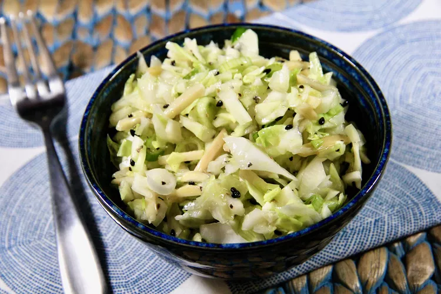

Japanese style cabbage.

Description.
Common salad served in japanese restaurants. Goes well with japanese and american food.
Ingridients:
- ½ large head cabbage, cored and shredded
- 1 bunch green onions, thinly sliced
- 1 cup almond slivers
- ¼ cup toasted sesame seeds
Dressing:
- 3 tablespoons sesame oil
- 3 tablespoons rice vinegar
- 1 tablespoon white sugar (Optional)
- 1 clove garlic, minced (Optional)
- 1 teaspoon grated fresh ginger root (Optional)
- 1 teaspoon salt
- 1 teaspoon black pepper
Steps:
- Combine cabbage, green onions, almond, and sesame seeds in a large bowl.
- Make dressing: Whisk together sesame oil, vinegar, sugar, garlic, ginger, salt, and pepper in a small bowl until sugar is dissolved.
- Pour dressing over cabbage mixture and toss until well combined.